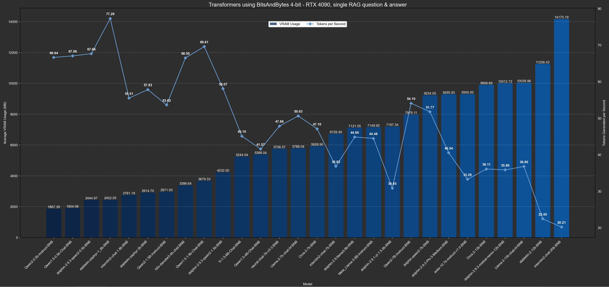

LM Studio
The genesis of this program was to work with LM Studio and that functionality will remain. The github repository for this program contains instructions on how to work with LM Studio.
"Local Models"
Release 5.0.0 introduced local models and release 6.0.0 greatly increased the number available. I have personally tested all of these models and handpicked them based on their RAG performance. Experiment at your leisure. Here are the approximate speed and resource requirements for all the models:
To use the new "local model" option you can simply select "local model" from the pulldown menu on the search tab. Keep in mind that the first time you use a specific model it must be downloaded and you should see a progress bar in the command prompt.
Tips
Regardless of whether you're using LM Studio or "local models," remember that chat models have a context limit just like vector models. Nowadays this is usually at least 4096 tokens, but this limit is for the grand total of what you send the LLM and its response. Thus, if you send it too much information it will not have sufficient context left to provide a meaningful response.
If using LM Studio, make sure to increase the context length to what's needed. When using a "local model" it's automatically set to the maximum context length of 4096.
To ensure that you don't exceed the context length, create a rough estimate of the number of tokens that will be
sent to the LLM. The Chunk Size setting within the Settings tab is in characters whereas a chat models
context limit is in "tokens." Approximately four characters equal 1 token. Therefore, if you send 20 chunks/contexts
to the LLM each with 200 tokens (equaling a Chunk Size setting of 800), it means you're sending
approximately 2000 tokens to the LLM...leaving only 96 tokens to provide its response.
In the future, this program will also include extremely large context lengths - both for vector models and chat models - but currently 4096 tokens is more than sufficient for most RAG purposes. If you properly phrase your query you should get highly relevant results in no more than 6-9 chunks/contexts, which leaves plenty of room for the LLM to response.
Selecting the "chunks only" checkbox will only display the chunks. However, if "local model" is also selected it will still be loaded into memory. This is a bug that will be fixed in upcoming releases. Until then, simply click "eject" and it'll be removed from memory; otherwise, the command prompt will not be returned to you because the process will still be running in the background.
Likewise, if you load a local model you should eject it before closing the program otherwise the command prompt won't be returned to you. Automatic ejection will be added in a future release.
Experiment with different chat models using the same query and contexts to compare the results. Also, after getting an LLM's response you can use "chunks only", submit your query again, and then doublecheck how accurate the LLM's response was.